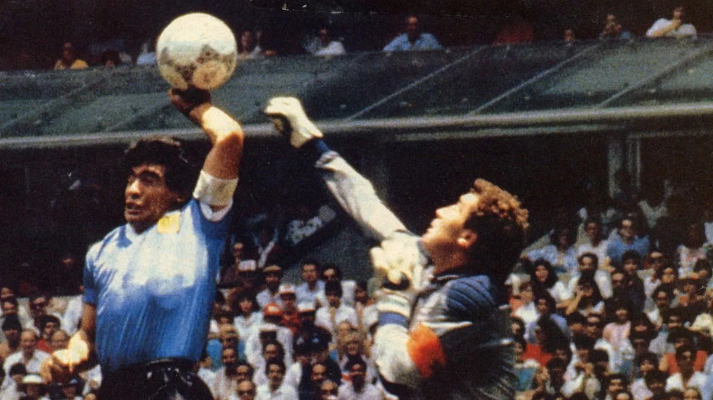
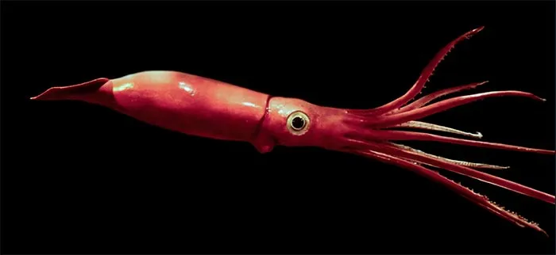
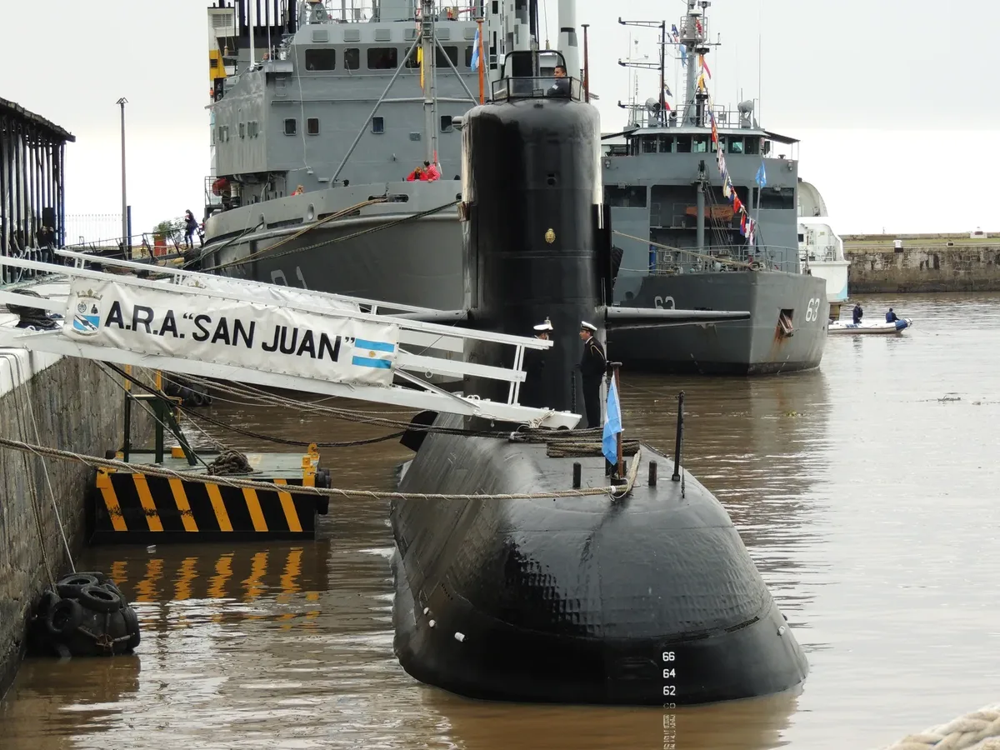
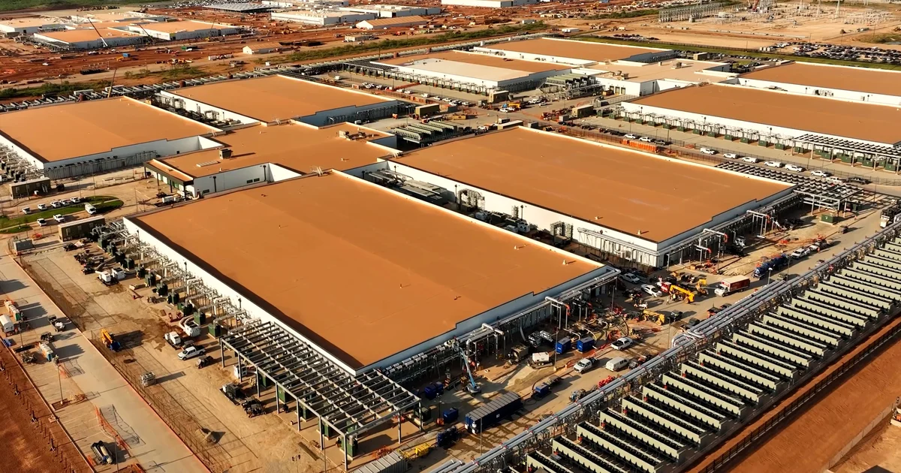
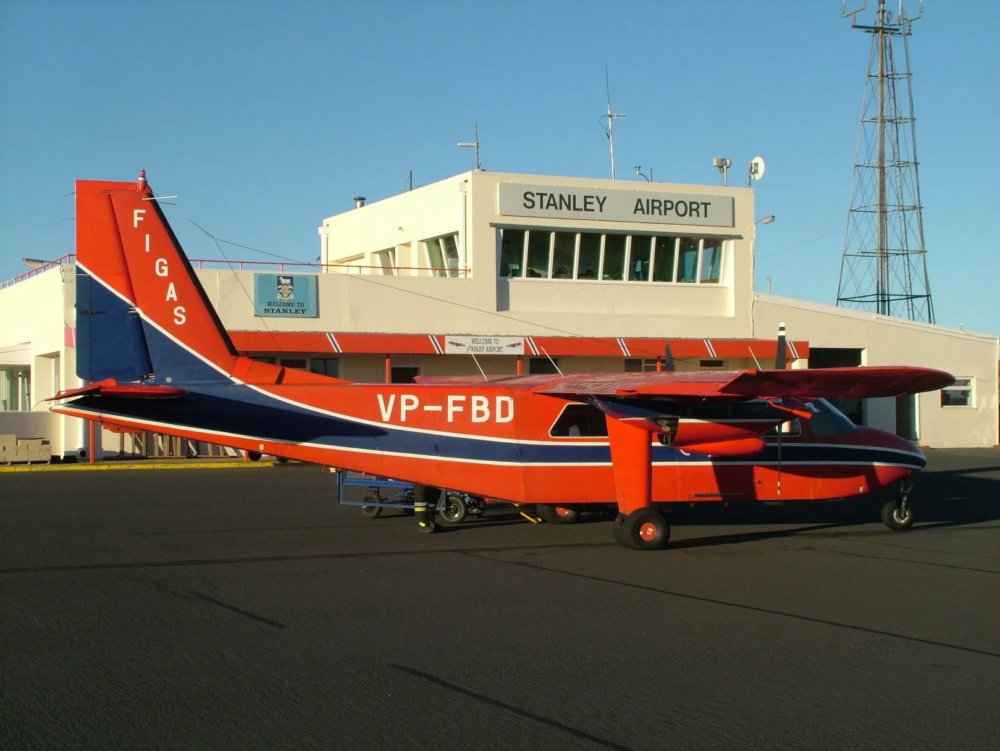
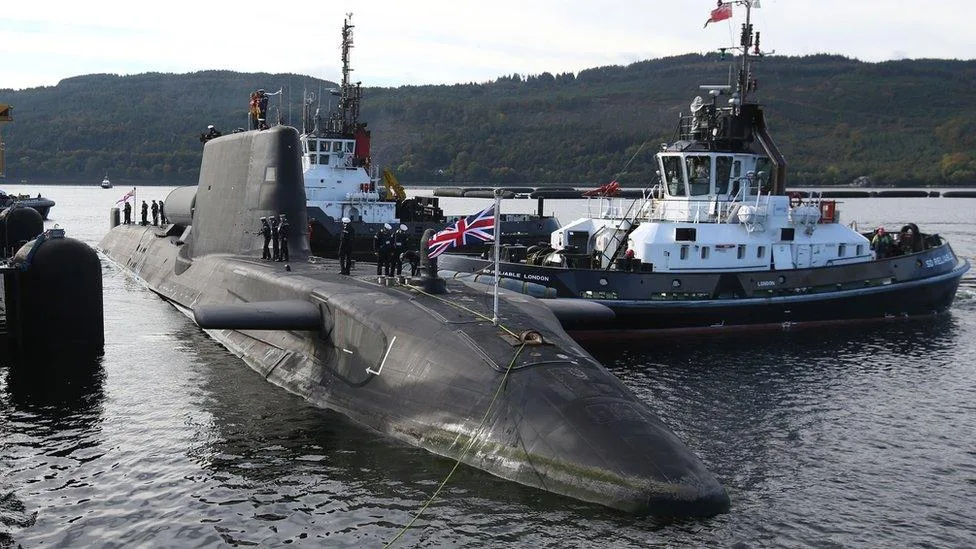
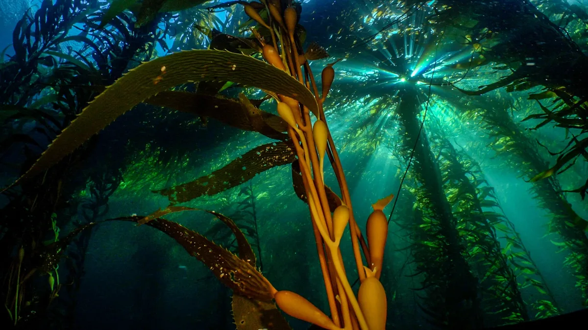
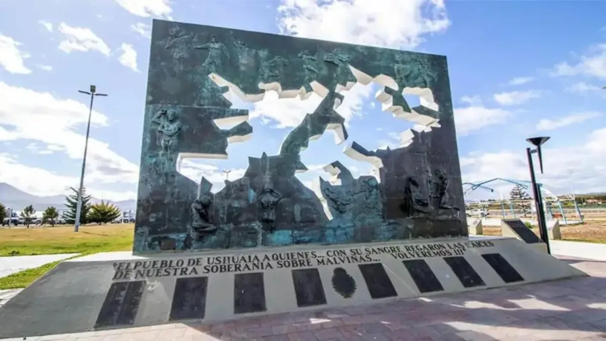

Sur Global, principio de todo.
J. Martineau es la firma editorial del fundador de GLOBALpatagonia, el primer medio digital panpatagónico. Escribe los informes del sitio: análisis y reportajes originales sobre la Patagonia argentina y chilena, las Malvinas, el Atlántico Sur y la Antártida.
Su trabajo se concentra en lo que otros medios suelen dejar sin cubrir: la geopolítica del Atlántico Sur y la cuestión Malvinas, la infraestructura que conecta —o aísla— al sur del continente, la energía, la fauna y las economías patagónicas. La premisa del medio es simple: la Patagonia no termina en la frontera. Se lee como una sola región, de Neuquén a Magallanes, de Chiloé a las islas del Atlántico Sur.
Para propuestas, datos o correcciones: formulario de contacto.










